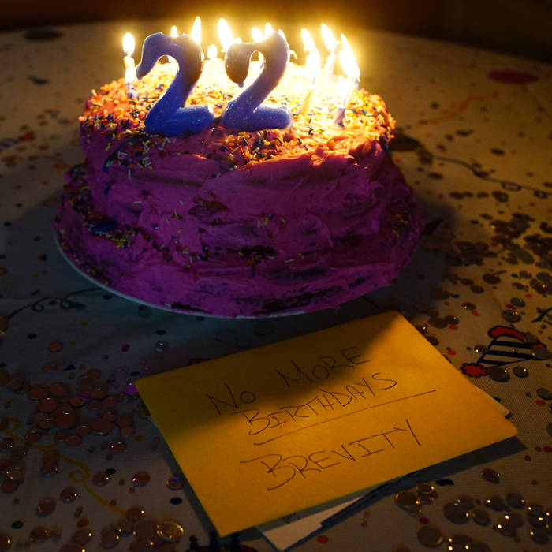

Live Performances
Music Videos
Store
------------------------- Bio -------------------------- Peter Fiorentino is a 25 year old song writer from Staten Island, New York. Though having worked heavily in rock music, his most personal projects lean more towards the genres that excited him as a child: Hip-Hop and Pop. His last release was No More Birthdays, an 8 song EP done with his band, Brevity. Since then he had writing credits on diet's debut album, Spectrum, on the songs Bee and Poseur as well as production credits for a series of live songs performed by Pasquale Gee. Peter's upcoming release is set for early 2020 under the moniker, Little Flower.
-------------------- Latest Release --------------------

- Wondering
- Sleeping on the Couch
- The Summer
- The Devil I Know
- Clocks
- Middle Man
- The King of Dock Street
- Just Like Me